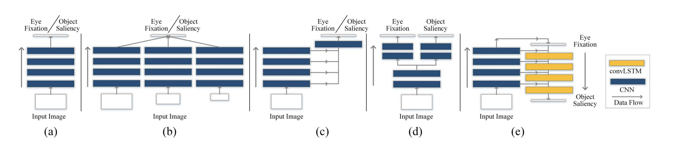
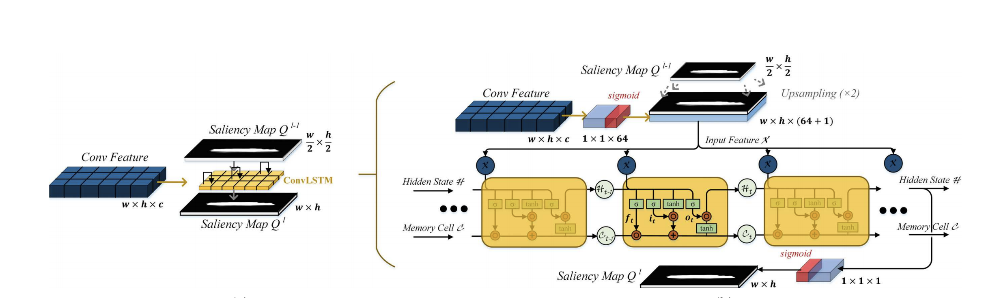

眼动点检测（Fixation Prediction，FP）和显著性物体检测（Salient Object Detection，SOD）一直是图像显著性检测领域的两个重要问题，不过历来研究两者间相关性的研究很少，这篇文章就是其中之一，觉得值得一读，顺便写个博客。
文章在相关工作部分对之前在FP及SOD领域的工作进行了比较凝练的总结，有必要着重看一下；此外作者还总结了先前常用的FP及SOD模型，如下图所示：

图很清晰，从左到右前四个都不用过多解释，第五个则是本文中提出的ASNet。说实话这个图对显著性检测网络的总结个人觉得不是十分合适，连最常用的Encoder-Decoder结构都没有体现出来，特别是现在到了20年后，这个图与主流网络偏差已经比较明显了，参考意义不大，但是其涉及的设计思路仍有价值。
本文所提出的ASNet结构如下图所示：

输入与常规的基于RGB图像的FP或者SOD任务模型一样，通过VGG逐层提取特征后利用最终的特征图做FP并通过FP的ground truth进行监督，然后将预测出的FP作为高层特征指导显著性物体检测。不过在从高层到低层融合特征时，文章很特别的使用了ConvLSTM，当然在此并不是为了利用时间信息（本来也不存在），而是通过输入统一特征图来进行迭代优化。鉴于本文中使用ConvLSTM的方式比较独特，作者还专门给这个部分加了张图：

损失函数上种类比较复杂，FP部分的loss是常规的KL散度，而SOD部分则混合使用了交叉熵与作者定义的三种分别基于precision， recall和F-measure的loss。
模型在PASCAL-S，MIT1003，ECCSD和HKU-IS上进行了测试。
最后说一句个人的想法，这种思路的模型需要同时有眼动数据标注和显著性物体像素级标注的数据，实际使用上成本问题可能会有点尴尬。。。